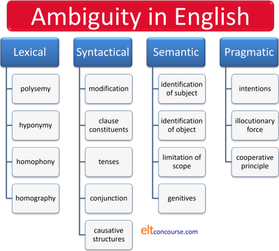

Ambiguity
This is quite a long guide with separate sections, not necessarily
connected or following on from each other.
If you are here for the first time,
and just want to get an overview of the scope of ambiguity and the
various classifications we can use, work through it
sequentially but if you are returning to check something, here's a list
of the contents to take you to its various sections.
Links in bold are to major sections, others lead to
subsections.
Clicking on -top- at the end of each section will
bring you back to this menu.
Ambiguity is not, of course, a phenomenon which is confined to
English. All languages can be used in a way that allows two
possible interpretations, sometimes more, of what seems to be a
simple enough statement or question.
In English, for example, the following has recently occurred:
He: Welcome
home. I've saved you a job.
She: Thanks, that's good of you.
He: Don't be sarcastic.
She: What?!
 |
Task: What has gone wrong? Think for a minute and then click here. |
The answer lies in the polysemous nature of the verb save. It has more than one meaning although the meanings are clearly connected.
- It means set aside for action or use in the future
as in, for example:
I have saved enough money for my holiday
I have saved the best idea till last - It means avoid having to use or do as in, for
example:
I have saved an hour's work by using the new program
She has saved the company lots of money - It also means rescue as in, for example:
She was saved from drowning
The castaways were saved by a passing fishing boat
of course but that is not relevant here.
What has happened in this little dialogue is:
- He is using the verb to mean
set aside or keep for later (meaning 1., above) but she has understood that it
meant avoid having to do something (meaning 2.).
Naturally, he expected her not to be delighted to be told there was a job waiting to be done, having been saved for her, so he interprets her thanks as being an attempt at sarcasm. - She, on the other hand, have assumed that the second meaning of the verb
save,
is understandably confused at being accused of sarcasm because
the thanks were sincerely intended.
What we have is an example of lexical ambiguity inherent in the polysemous nature of the verb.
Many of the examples below are culled from other guides on this site in which ambiguity is considered almost in passing. Here, it is the focus.
 |
Sources of ambiguity |
This guide considers three main possible sources of ambiguity, explains what the problem is and tries to suggest some ways to remove the ambiguity. The three are:
- Lexical ambiguity
The source for this is the fact that some words have homonyms which look and sound the same but carry different meaning.
In spoken language, homophones will have the same issues and in written language homographs may also be a source of ambiguity.
The issue we saw above with the word save is not, however, to do with homonymy; it concerns polysemy, the phenomenon of words have different but connected meanings rather than different and unconnected meanings. The borderline between homonyms and polysemes is, however, somewhat blurred.
There is a guide to the polysemy, linked below in the list of related guides at the end.
Here are some examples of what is meant:
It is unlikely that any of these examples set in context, will produce a great deal of ambiguity, of course, but, standing alone, they cannot be disambiguated.Issue Example Meaning 1. Meaning 2. homonymy They found the quarry They found the animal they were hunting They found the source of building stone polysemy What did you read last year? What did you study at university? What reading did you do last year? He may come He has permission to come It is possible he will come grey area She took a taxi She used a taxi as transport She stole a taxi homophony The border / boarder is here The edge / frontier is here The paying guest / tenant is here homography He bought a new bow He bought a new violin accessory He bought a device for shooting arrows - Syntactical ambiguity
There are a number of ways ambiguity can arise from the syntax of a sentence or clause and they are mostly to do with what modifies what or what qualifies as an independent constituent of a sentence or clause (related areas as we shall see).
They can also be to do with how tense forms in English are understood and how subordination and coordination are understood.
Here are some examples:
Syntactical ambiguity arises from the phenomenon of syntactical homonymy and can sometimes be almost impossible to untangle without reconstructing the clause or sentence.Issue Example Meaning 1. Meaning 2. modification I said I would come on Monday I said this on Monday I will come on Monday Being honest, he was seen as rude My honest opinion is he was seen as rude Because he was honest he was seen as rude independence I washed the car in the corner I washed the car which was in the corner It was in the corner that I washed the car I spoke to the man in my office I spoke to the man who was in my office It was in my office that I spoke to the man tense form I'm driving to London this week Sometime this week I will drive to London It is my temporary habit to drive to London The professor is writing to the students The professor is currently writing The professor intends to write conjunction She was exhausted but Mary worked on Mary and she are the same person Mary and she are different people Someone stole my car so that I had to take the train The result of the theft was that I took the train The purpose of the theft was to force me to take the train - Semantic ambiguity
Some see this as a subset of syntactical ambiguity but it is noticeably different because much depends on the shared knowledge and speaker perception rather than simply the syntax. It concerns what is meant, not what is necessarily understood by decoding the syntax.
Here are some examples:
The last example is called by some anaphoric ambiguity because it is impossible to know which referent is appropriate for he.Issue Example Meaning 1. Meaning 2. who does? John and Peter have a house in London John and Peter share a house in London John and Peter have separate houses in London what is the object? John used his own car and so did Mary Mary and John used John's car Mary and John used their own cars limitation The tiger is a dangerous animal This particular tiger is dangerous Tigers are dangerous what is the subject? John saw the boss and he asked him to wait John asked the boss to wait The boss asked John to wait
At the end we will also consider a fourth source of ambiguity which is not dependent on language use but which stems from social and cultural sources.
 |
Lexical ambiguity |
It is quite rare for a lot of polysemes and homonyms,
especially those concerning content words, to cause a great
deal of difficulty because the context almost always determines the
meaning that is meant.
We are unlikely to misinterpret, for example:
I took an aspirin
as
I stole an aspirin
or
She dug the garden
as
She appreciated the garden
although misunderstanding is always possible if the context is
too thin.
Function words and auxiliary verbs are a very different matter because
the meaning they convey relies on the co-text.
Here are some examples but no guide to ambiguity can ever cover all
the possible sources.
will and other modal auxiliary verbs |
|
|
Will you marry me? Well, will she? |
The verb will is polysemous because it applies to a future time
in one sense and to a current willingness in another. So,
Will you marry me?
concerns the woman's current willingness to commit to something,
but
Will she marry him?
is a question requiring speculation about the future.
In the first example, the modal auxiliary verb refers to dynamic
modality (volition) and in the second to epistemic modality
(propositional truth).
That is the reason that will can appear in both parts of a
conditional sentence such as:
I will give you a lift if you will share the
petrol costs
Normally, the rule is not to use will in both clauses
but it is correct here because the first incidence of will refers to the future
and the second refers to the hearer's willingness to do something.
It is only useful to tell learners that we cannot use will
in both parts of a conditional sentence if we are clearly using the
verb in one of its main meanings. In other words, being
careful to avoid ambiguity.
A fundamental reason why modal auxiliary verbs cause so much
trouble for learners is their polysemous nature.
Here are some examples of what is meant:
| Verb | Example | Meaning 1. | Meaning 2. |
| might | She said they might ask questions at the end | She gave them permission to ask questions | She thought it was possible they would ask questions |
| may | They may go | They have permission to go | They might go |
| He may not come | I will allow him not to come | He might not come | |
| can | Can you help her with her homework? | Please help her with her homework | Are you able to help her with her homework? |
| You can talk to him | I give you permission to talk to him | He is approachable | |
| †I can not smoke | I have the ability not to smoke | I am not allowed to smoke | |
| would | He would be rude to his mother if she asked a question | He was habitually rude to his mother when she asked a question | If his mother asks a question his response is likely to be rude |
| could | She could explain it more clearly | She was able to explain it more clearly | She should explain it more clearly |
| It could bend | It has a flexible nature / ability | It is possible that it will bend | |
| I could have left it with John | John gave me permission to leave it with him | It is possible that I left it with John | |
| If you come late you could miss the speeches | It is possible you will miss the speeches | You will be able to miss the speeches | |
| ought | He ought to be there | I expect he is there | He has an obligation to be there |
| must | He must be at home | I am certain he is at home | He is obliged to be at home |
| have to | He has to be at home |
The moral is that all modal auxiliary verbs have the possibility
to be interpreted in multiple ways.
Elsewhere on the site, the verb could is shown to have
eight possible meanings (present possibility, future possibility,
past possibility, present ability, future ability, past ability,
permission, complaint), might has six (present possibility,
future possibility, past possibility, suggestion, permission,
complaint) and even should has four (advice, obligation,
conditional uses, logical deduction).
Other modal auxiliary verbs, especially the central nine, suffer
from the same ambiguity of modality type.
adjectives |
|
| The hardworking students passed |
Scope
This sentence:
The hardworking students passed the examination
is ambiguous because this may mean either:
The students who worked hard passed the examination
(and other
students, less hardworking, did not)
or
The students, who worked hard, passed the examination
(all of them were hardworking and all of
them passed)
Other adjectives are open to similar multiple interpretations.
For example:
The available money is inadequate
in which the adjective available can mean:
all the money (with no more to come)
the money available now (with more to come)
This can be disambiguated in two ways:
- By making a relative pronoun clause and distinguishing
between defining (restrictive) and non-defining (unrestricted)
forms:
The money, which is available, is inadequate
(i.e., it is all available)
vs.
The money which is available is inadequate
(i.e., only the money which is available, not all of it) - By post-positioning the adjective:
The available money
all of it
vs.
The money available now
some of it with more to come
The second disambiguation trick works with other adjectives as
in:
The visible stars
The stars visible tonight
The present staff
The staff present now
The first refers to all the visible stars, the second to only
those visible tonight, the third to the entire staff at the moment
and the fourth to only those employees who are here.
Determining how an adjective should be understood in the sense of what is included and what excluded is not always simple. It is not that we have a polysemous word acting as an adjective (although that happens) but where the scope of modification starts and stops.
The adjective bad is somewhat ambiguous in this respect. For
example:
She felt bad
could imply that she felt unwell or that she felt guilty although
this can be disambiguated with the use of the adverb so:
She felt badly
can only mean unhappy or guilty, not unwell.
Classifiers, epithets and punctuation
There is some ambiguity in written language whether a word is
intended as an adjective (an epithet) or a classifier because:
a senior school teacher
could be interpreted as
a teacher at any type of school who is
experienced and older
or
a teacher who happens to work in a senior school
In the former, the word is adjectival and in the latter it is a
classifier.
Commas are often optional but required when there is possible
ambiguity. For example:
It's a large house plant
is unlikely to be misunderstood as a plant only for use in large
houses but to avoid any ambiguity, it can be written as
It's a large, house plant
Compare:
It's a small garden plant
in which there is ambiguity which can be eradicated by punctuating
it as
It's a small, garden plant
or
It's a small-garden plant
old and new: inherent and non-inherent
meanings
The adjective old may be applied to inanimate and animate nouns
but when it is applied to animate nouns the meaning will vary
depending on how it is used (attributively or predicatively).
So, for example:
He is an old friend
will be understood non-inherently as applying to a long-lasting
friendship, not to the person but
My friend is old
will be understood as applying to the friend, not the friendship.
Unfortunately the word old has two common antonyms: new
and young and they are differently understood depending on
the nature of the noun to which they are applied.
So, for example:
She's a new friend
and
All these students are new
will not be seen as applying to the people but to their recent
arrival whereas
She's a young friend
or
The students are young
can only be understood as applying to the people directly.
However:
There's a new car in the car park
and
That car in the car park is new
are truly ambiguous and could mean
The car has only recently appeared in the car
park
or
The car has recently been manufactured
and only context can disambiguate the meaning.
A further, connected source of ambiguity lies in the fact that
some adjectives can apply to a person and to a relationship so, for
example, while it is clear that:
She's a new friend
They are old rivals
both apply to the friendship and the rivalry, not the people
involved, it is less clear whether the adjectives in
He's a reliable friend
She's a remarkable friend
refer to a reliable / remarkable person or a reliable /
remarkable friendship.
Ambiguity can be avoided by using the adjective predicatively
because then the assumption will always be that it applies to the
person:
My friend is reliable
Her friend is remarkable
Comparative forms

The question here is whether the words more and less
are acting as adverbs modifying adjectives or as determiners
modifying noun phrases. It matters because the meaning changes
depending on the grammatical function of the word. In that
sense, this straddles the boundary line between lexical and
syntactical ambiguity.
Here are three examples:
- They provided more accurate figures
- = They provided more
figures which were as accurate as the old ones
or - = They provided figures which were more accurate than the old ones
- = They provided more
figures which were as accurate as the old ones
- I want more useful work from you
- = I want more work from you which
is as useful as the work you have done
or - = I want work from you which is more useful than the work you have done
- = I want more work from you which
is as useful as the work you have done
- She had less expensive work done
- = She had less work done which
was as expensive as the previous work
or - = She had work done which was not as expensive as the previous work
- = She had less work done which
was as expensive as the previous work
The ambiguity arises from the fact that in:
i.a., ii.a. and iii.a., the words more and less
are determiners referring to the noun phrases accurate figures,
useful work and expensive work
but in:
i.b., ii.b. and iii.b., the words more and less
are adverbs modifying the adjectives accurate, useful and
expensive
It is impossible to tell by looking at the sentences what the words more and less are doing grammatically. Rephrasing as above will remove the ambiguity.
Superlative forms
Compare
The girl is most intelligent
and
The most intelligent girl
both of which are possibly ambiguous because they can mean
either:
The very intelligent girl
or
The girl who is more intelligent than the all
the others
The use of the definite article determiner can disambiguate
this because
The most intelligent girl
will only be understood in the second sense.
The key here is not to word class because in all the examples, the
word most is an adverb modifying the adjective.
However, the word is polysemous because is means very or
extremely and it forms the superlative of an adjective
expressing the uppermost degree.
 |
Syntactical ambiguity |
Much of syntactical ambiguity arises from the possibility of, so
to speak, throwing a mental switch to decide which line to take.
Tense forms in English, or most languages, do not have a one-to-one
relationship with time. We use, therefore, present and past
tenses to talk about the future, past tenses to talk about the
present and so on.
There is a good deal more about this in the guides to time, tense
and aspect, linked below, so some examples of the possible
ambiguities will be enough here.
 |
-ing forms |
| He's driving |
At first sight, a sentences such as:
He's driving
is not ambiguous, especially when it's linked to an image as here.
However it can mean:
- Driving is what he is doing right this minute
He won't answer his phone. He's driving. - Driving will be his preferred mode of travel for the
foreseeable future
He's driving to work these days because the trains are so unreliable - Driving will be a temporarily habitual form of transport
I don't need the car for a while so he's driving to work at the moment - Driving is what he has agreed to do in the future
I can have another beer because he's driving me home later
This is where we encounter a famous Chomskyan concept.
Chomsky, to whom there is a guide linked at the end, chose to
demonstrate what he meant by deep structure with the example
sentence:
Visiting aunts can be boring
because that can mean:
Aunts who visit can be boring
or
The activity of paying a visit to aunts can
be boring
It is, in fact a bit of a four-way cheat in our terms here because the ambiguity relies on:
- Selecting a transitive verb so that there is manufactured
ambiguity concerning subjects and objects. You cannot, for
example, construct a similarly ambiguous sentence with verbs
like arrive or speak because you get the
unambiguous:
Speaking clocks can be irritating - Selecting a semantically allowable transitive verb. You
cannot, for example, construct a similarly ambiguous sentence
with verbs like explain or show because you
get the unambiguous:
Showing your anger can be inadvisable - Using the uninflected modal auxiliary verb, can, to
disguise the verb-noun concord. You cannot, for example,
construct a similarly ambiguous sentence without the modal
auxiliary because that produces:
Visiting aunts bore me
Visiting aunts bores me
which contain no ambiguity because the first has a plural noun as the subject and the second has a singular gerund as the subject. We don't need to think about deep structure to disambiguate the sentences, simply leaving out the modal auxiliary verb will do. - Selecting a verb which has a gerund form (a verbal noun) and
a participle form which can act as an adjective. You
cannot, for example, construct a similarly ambiguous sentence
with verbs like wear or repair because neither
wearing nor repairing can operate as participle adjectives
although the verbs are transitive.
We allow:
Wearing warm clothes can be useful
Repairing computers needs some care
but not:
*These are wearing clothes
*He is a repairing man
It is quite difficult to make a parallel sentence to the one
Chomsky used although:
Eating apples can be healthy
Drinking water can be good
Cleaning materials may be expensive
Burning rubbish could be dangerous
and just possibly
Climbing plants can be dangerous
(if you are a field mouse)
will show the same kind of ambiguity.
The parlour game is to think of ten more.
In fairness, this was not the point that Chomsky was making.
He used ambiguity as a way of revealing the inadequacies of a
structuralist approach to grammatical analysis and was not concerned
with communicative effect.
Tense-form ambiguity is a much more important issue for teaching.
Other non-finite -ing forms |
Misuse of the -ing participle in non-finite
clauses often results in what is called a dangling or unattached
participle. For example:
Getting on the bus, John's wallet fell
from his pocket
is semantically and grammatically flawed because it was not the
wallet that got on the bus.
To avoid this kind of ambiguity, the participle and the main clause
verb need to have the same subject. The use of a finite
clause solves the issue:
While he was getting on the bus, John's
wallet fell from his pocket
In this case, little ambiguity is caused because we know
that wallets do not, of their own volition, take public transport.
However, there are times when the rule is not quite so clear cut.
For example:
I saw Mary getting off the bus
is likely to be interpreted as:
I saw Mary while she was getting off the bus
but could mean:
While I was getting off the bus, I saw Mary
We need to be more careful here because both the possible
subjects are able to take public transport.
In order to repair the ambiguity, we have to rephrase the sentence
as:
I saw Mary when she was getting off the bus
or
I saw Mary when I was getting off the bus
The rule of attachment to the same subject is often relaxed
so we allow:
Being Friday, the staff left
early
which is not ambiguous because the staff cannot be Friday.
On the other hand,
Being optimistic, Mary will
be able to do the job
is ambiguous depending on whether the speaker
or Mary is the optimist.
The ambiguity here is explained a little more (and a little more
clearly) below, under semantic ambiguity.
These sorts of non-finite clauses used to express temporal or causal
relationships can give rise to some ambiguity of meaning.
For
example:
Being in New York, she went to see him
could mean:
While she was in New York, she went to see him
or
Because she was in New York, she went to see him.
In all such cases, rephrasing the thought using finite rather than non-finite verb forms solves the problem as can using the right subordinating conjunction as in the examples above.
Adverbial modification |
|
| He quickly got lunch |
It is often difficult to determine which verb an adverb modifies
when there are two verbs in the same sentence. For example:
The people who came quickly got lunch
has two interpretations depending on which verb is being modified by
quickly:
- The modified verb phrase is came, in which case we
have:
People who were quick to arrive got lunch - The modification belongs with the verb got, in
which case we have:
The people who came got lunch quickly
We can rephrase this to remove the ambiguity as we have done
here. The key is to put the adverb in the right place.
It can also be disambiguated by pausing in speech after quickly
(and signalling sense 1.) or after came (and signalling
sense 2.).
That is straightforward with middle-position adverbs such as those
of manner which are mobile but even easier with adverbs of
indefinite frequency as in, e.g.:
The men who arrived late frequently missed
lunch
vs.
The men who frequently arrived late missed
lunch
because these adverbs conventionally precede the main verb.
There are also times when it is not clear whether an adverbial is
functioning to modify a verb or its subject or object.
For example, in:
His friends at that time were working
could mean:
- His friends were working at that time
which modifies the verb phrase, or - The friends he had at that time were working
which modifies the noun phrase
and unless we know whether the prepositional phrase is modifying
the noun or the verb phrase,
we cannot arrive at the meaning. This is an example, arguably,
of phrase constituent ambiguity, which is considered in much more
detail later. The concepts of syntactical and
phrase-constituent ambiguity overlap with blurred edges.
Simple rephrasing (as above) will disambiguate the meanings.
Finally, there are times when an adverbial can apply to either of
two verbs. When verbs form strings in the syntax (i.e., they
catenate) some ambiguity sometimes arises in deciding which verb the
adverbial is modifying so, for example, in:
She undertook to do the work straightaway
it is not apparent whether
- the undertaking happened immediately
in which straightaway is modifying the verb undertake, or - the doing of the work will happen immediately
in which straightaway modifies to do the work
The intuitive response from many will be that the adverbial
modifies the nearest verb so interpretation b. is probably inferred.
We can disambiguate the sentence by moving the adverbial and
producing:
Straightaway, she undertook to do the work
which signals interpretation a.
Conjunctions |
Some conjunctions cause ambiguity issues.
although and while
Both although and while are subordinating
conjunction of concession and occur unambiguously in, for example:
I like reading in the evening while my
husband prefers watching TV
Although I like reading in the evening, my husband prefers
watching TV
etc.
A little care is needed, however, because while is also
a temporal subordinator so, for example:
Although it is raining, I'll take a walk
is unambiguous because although has only one function
but
While it is raining, I'll take a walk
can mean:
Although it is raining I'll take a walk
or
As long as it is raining I'll take a walk
It could also mean:
Because it is raining I'll take a walk
because while sometimes carries the sense of causality
usually signalled by so or because.
but and although
There is also scope for ambiguity with the distinction between
coordinators and subordinators.
In coordinated clauses
we can omit the subject, providing it is common to both clauses so we get, for example:
Mary was exhausted but worked on till six
in which it is clear that Mary is the subject of both clauses.
We cannot do this with subordination so we do not allow:
*Although Mary was very tired, worked on till six
There is, however, a little more to it than that because in a
sentence such as:
He was exhausted but John worked on till six
it is averred by some that He and John must refer
to different people. In other words, He cannot be a
cataphoric reference to John in a coordinated sentence.
This is somewhat questionable and the sentence is at best ambiguous
insofar as He and John could refer to the same
person or to different people depending on context and co-text.
With subordination, on the other hand, cataphoric reference is
assumed so in:
Although he was exhausted, John worked on
till six
it is inevitable that he and John will be assumed
to be the same person.
so and so that: purpose or result?
The conjunction so also causes problems because it
implies both a result and a cause.
It is resultative in, for example:
The night was very clear so I could see the
ships out to sea
It is causative in, for example:
I dug a deep hole so the tree was firmly
planted
However, ambiguity can arise with a sentence such as:
Someone stole my car so I couldn't get to work
which means either:
- The result of the theft of my car was that I couldn't
get to work
or - Someone stole my car to prevent me getting to work
The way to disambiguate is to replace so with because when we are
referring to result and then we get:
Because someone had stolen my car I couldn't
get to work
which is unambiguous, or to rephrase the thought as in b.
The same consideration applies in these examples.
It is resultative in:
The ground was icy so that I was careful how
I walked
in which the care is a result of the ice and so that
is acting as a coordinating conjunction.
It is, however, purposive and a subordinating
conjunction in:
I put salt on the driveway so that the ice
would melt
This means that, e.g.:
He was standing in the light so that I could
see him
is ambiguous and means either:
- The result of his standing in the light was to make him
visible
(coordinating the clauses)
or - He stood in the light in order to make himself visible
(subordinating the second clause to the first)
Again, we have to rephrase to exclude the possibility of ambiguity.
before
Temporal conjunctions can also cause ambiguity if handled
carelessly. For example:
I expected he would be happy with the figures before the meeting
started
can be interpreted either as:
- Before the meeting started, I expected he would be happy with the
figures
or - That he would be happy with the figures before the meeting started was what I expected
The ambiguity can be resolved by moving the temporal clause to the initial position as in a.
if and when
The conjunctions if and when also cause
problems. In, for example:
When possible, the work should be completed
without disturbing the residents
has two interpretations:
- Whenever it is possible, the work should be completed
without disturbing the residents
or - If it is possible, the work should be completed without disturbing the residents
Resolving the ambiguity simply means being careful to use if when a conditional rather than temporal meaning is intended.
if and whether
Consider:
Tell me if you need any help
which has two interpretations:
- Tell me if you need any help
as a true conditional in which the imperative depends on the need for help
or - Tell me whether you need any help
which is not conditional and simply asks for the speaker to be informed
Disambiguation again involves using if only in conditional senses.
because
Some ambiguity may arise with negative causality so, for example:
I didn't come because of the chance that she would be there
may be interpreted either as:
- The reason I didn't come was because there was a chance
she would be there
or - The reason I came was not that there was a chance that she would be there
Only context and intonation (stressing because) will disambiguate
the meaning unless we rephrase the whole meaning as:
There was a chance she would be there so I
didn't come
and
That there was a chance she would be there
was not the reason I came.
This is also considered below when we come to the ambiguity
that negative sentences can evince.
to and in order to
The word to is sometimes just an abbreviation
of in order to.
This can create some ambiguity.
Compare for example:
- I agreed to go to the restaurant
- I agreed to get a bit of peace.
In the first case, we have a to-infinitive doing its
usual catenative job referring to a prospective event.
In the second case, however, to is an abbreviation of
in order to and is not catenative.
Here's a slightly different example:
- I agreed to the proposal to finish the meeting early
is ambiguous because it means either:
- I agreed to the proposal that the meeting should finish
early
or - I agreed to the proposal in order to finish the meeting early
and only rephrasing such as above can disambiguate the sentence.
 |
Clause constituents |
This is a major area of ambiguity and the final one to tackle
under syntactic ambiguity.
There is a dedicated guide to disentangling clause constituents on
this site, linked below, so here we will rely on a few examples of
the sorts of ambiguity that can arise.
Here are the examples:
Instrumental phrases
Many case-grammar languages have a way of marking instrumental
case but English doesn't, preferring to rely on prepositional
phrases. Unfortunately, prepositions themselves are
polysemous. The preposition with carries the meaning of an
instrument as in:
I cut down the tree with an axe
and of accompaniment as in:
The man in the corner with the dog.
This causes problems.
For example:
Anne hit the intruder with a chair
is probably not ambiguous at all (but it is conceivable that
the intruder was carrying a chair).
Anne shot the intruder with a knife
is also unambiguous because you can't shoot someone with a
knife so the only interpretation is that the intruder carried the
knife.
However,
Anne hit the intruder with a gun
is truly ambiguous because it can be interpreted as either:
- Anne used a gun to hit the intruder
or - Anne hit the intruder who was carrying a gun
So rephrasing is necessary to make the sense clear.
Prepositional phrases as modifiers of nouns or verbs
Take:
I shouted to the man by the river
which has two interpretations:
- By the river I shouted to the man
or
It was by the river that I shouted to the man - I shouted to the man who was by the river
or
It was the man by the river that I shouted to
It depends on whether we consider by the river to be an
independent phrase or one which is attached to the noun.
The subject of the sentence is clear: it is I.
The object, however, can either be:
- the man by the river
or - the man
The adverbial phrase which modifies the verb is then absent (if
a. is the object) or is by the river if b. is the object.
In other words, we have to decide whether the shouting happened by
the river or not.
We can use a diagram to make it clear:

In the first case the verb phrase in blue has the blue adverbial
modifying it with the verb's object in red. The phrase by
the river is independent and can be moved to the beginning to
get:
By the river I shouted to the man
In the second case the verb phrase is unmodified and the object is
in red but by the river is not an independent phrase
because we cannot move it to the beginning and retain the same
sense.
Here are some more examples taken from various guides on this site for you to untangle:
- He used the computer in his office
- Which computer did he use?
- Where did he use the computer?
- The teacher shouted at the boy in room 13
- Where did the shouting happen?
- Which boy did the teacher shout at?
- He cut up the tree in the corner
- Which tree did he cut up?
- Where did the cutting up happen?
- John upset the lady in the garden
- Who did John upset?
- Where did the upsetting happen?
- He read the book on the island
- Where did he read?
- What was the subject of the book?
Disambiguation in writing
In written language, it is impossible to disentangle independent and mobile phrases so rephrasing is the option. This often means:
- Moving the prepositional phrase:
At his office he used the computer - Making a cleft sentence:
It was the boy in room 13 that the teacher shouted at - Otherwise defining the object:
He cut up the corner tree - Making a passive:
The tree in the corner was cut up - Using a relative pronoun clause:
John upset the lady who was in the garden - Changing the prepositions and producing, e.g.:
He read the book about the island
Disambiguation in speaking
In speaking we can deliberately move the tonic syllable to disambiguate what might otherwise be unclear. For example, the sentence:
Anne hit the man with the chair
has two possible interpretations as we saw.
We can disambiguate this in speaking by paying attention to how the utterance is stressed. Like this:
| 1 | Anne | hit the | MAN | with a chair |
| pre-head | head | nucleus | tail | |
| 2 | Anne | hit the man with a | CHAIR | |
| pre-head | head | nucleus | - |
In case 1, the pitch movement is most obvious on the word man
so that becomes the focus of attention.
In case 2, chair is the focus because that is where the
pitch movement occurs.
Disambiguating which meaning is intended by pausing and tone shifts
are what Wells refers to as the demarcative function of intonation,
i.e., the separating off of the crucial data.
Position and direction adjuncts
The usual rule in English is that position adjuncts cannot
co-occur with dynamic verbs of motion but directional adjuncts of
place can so we do not allow:
*He is climbing at the top
because at
refers to place, not direction,
but we do allow
He is climbing to the top
and
He is sitting at the top.
An ambiguity can arise, therefore, concerning whether, for
example:
The children were running outside
means:
When the children were outside, they were
running
or
The children were in the process of moving
from inside to outside
Usually, the assumption will be that direction of movement is
the intended message but that is not always the case.
Because some prepositional adjuncts are always directional, the
ambiguity cannot arise, for example, with:
I'm going to walk into the garden
but can with the preposition in and outside
which refer to both direction and position so
He walked in the airport
might mean he did some walking in the airport or that he moved
into the airport on foot and
They threw it outside the house
might mean they threw it from inside to outside or that it was
outside the house before they threw it.
The former is what people will usually understand.
yes-no questions
Nearly all yes-no questions are, by their nature
ambiguous in terms of what they are asking. Really simple
questions such as:
Is John here?
are not ambiguous because the direction of the question can only be
John's presence or absence.
However, a question such as:
Did Mary cook the turkey last night?
contains four phrase elements (the subject, the verb phrase, the
object and the adverbial of time). It means, therefore, that a
yes-no question could be directed at any of these
constituents. Like this:
Was it Mary who cooked the turkey last night?
Was it last night that Mary cooked the turkey?
Was it the turkey that Mary cooked last night?
What did Mary do to the turkey last night?
and only the co-text and context can disambiguate this in writing
although sentence stress can make the sense clear in spoken
language by stressing Mary, last night, the turkey and
do respectively.
The disambiguation which the cleft forms allows is, incidentally,
one of the motivations for their use although, as we see from the
fourth question, the verb
cannot be the focus of a cleft sentence form and the question is
differently formed. We cannot allow:
*Was it cook that Mary did to the turkey last
night?
There is more on cleft sentences in the guide to them, linked below.
 |
Causative structures |
You are probably aware that two verbs in English, have
and get, function in causative structures to place the
focus on what is done rather than who did it. So, for example,
it is easy to see that:
I got my house painted last year
and
I had the report re-written with the new
figures
both signal the fact that the speakers / writers did not affect
the action personally but persuaded, cajoled, required or paid for
others to do it for them. (The guide to the causative which
explains how this is achieved is linked below.)
Unfortunately, the structures themselves allow of multiple interpretations and, in many cases, only context and co-text can help us to the meaning.
Ambiguity arises because the structures themselves are used to signal different meanings so, for example:
- Often the meaning is transparent so, e.g.:
She had her car repaired by the garage at the end of the road
or
She got her car repaired by the garage at the end of the road
are both unambiguously causative structures which signal what she required the garage to do. - She had her car stolen for the insurance money
and
She got her car stolen for the insurance money
both refer to a fraudulent act. - She had her car stolen while she was on holiday
and
She got her car stolen while she was on holiday
both probably refer to an unfortunate event. - She had her foot caught in the lift doors
refers to an unfortunate state or event and is not causative
but
She got her foot caught in the lift doors
can only refer to an unfortunate event not a state but is similarly not causative.
So, standing alone, a sentence such as:
She got the safe broken open
can carry three different senses (fraudulent act, misfortune or
simple causative).
Context is needed to know which is the correct interpretation.
Unfortunately, again, both verbs can signal the speaker's
accomplishment, not the fact that the speaker did not perform the
action personally. Further ambiguity arises because English
does not distinguish the form of a participle used verbally and one
used adjectivally. So, for example:
I got the report finished on time
will usually be interpreted as
I succeeded in getting the report finished on
time
and
I had the report nearly finished when the new
figures came in
signals the fact that the report writing was almost
accomplished. In both cases, the word finished is
interpretable as a participle adjective equal to a (nearly)
finished report .
When the context and co-text do not help, however, ambiguity arises
so, e.g.:
I need to get the car washed for the wedding
can mean:
I have to wash the car for the wedding
or
I have to have the car washed for the wedding
and only context and co-text can disambiguate the senses.
Compare, too, for example:
I go the kitchen floor swept and mopped by
six o'clock
which almost certainly refers to the speaker's achievement,
with:
I got the kitchen floor swept and mopped by
the maid
which is clearly causative.
No ambiguity can arise, therefore, when the adjective is not
derived from a verb so:
I got the figures right
and
I had the figures right
are unambiguous, but
I got the figures worked out
and
I had the figures worked out
are both ambiguous.
These uses of ostensibly causative structures when no causal effect
is implied is non-intuitive and confuses learners easily.
 |
Semantic ambiguity |
Now we come to semantic ambiguity caused mostly by the hearer's inability to understand what belongs to what in the utterance.
 |
Genitives |
| the gardener's shed |
The genitive in English does more than refer to possession and therein lies a good deal of scope for ambiguity.
In the example above of the shed, for example, it is unclear whether the reference is to:
- a particular gardener's workplace (association)
- a shed owned by a gardener (possession)
- the type of shed typically used by gardeners (description)
Additionally:
- a young man's job
does not necessarily refer to a job held by a young man but refers to a type of physically demanding work - a doctor's surgery
does not usually refer to a surgery owned by a doctor but one in which a doctor (any doctor) carries out medical work - an agricultural worker's cottage
is most unlikely to belong to a particular worker but describes a type of modest building
Rephrasing is the only way to disambiguate but it is often a clumsy alternative and many prefer to leave the ambiguity standing and rely on the context to make it clear which meaning of the genitive is intended.
Another function of the genitive is described as
objective insofar as it refers to the object of a verb. For example:
the woman's imprisonment
probably refers to the fact that the woman is the object and
was imprisoned but it needn't because it can be a subject genitive
as in:
the woman's imprisonment of the children
in which the woman is the subject and did the imprisoning.
From that we can then abstract a genitive:
the children's imprisonment by the woman.
But, in order to disambiguate, we have to select a different
form of the genitive and use the of-phrase, periphrastic
structure instead of the 's inflexion. Then we can arrive at a distinction between:
the imprisonment of the woman
and
the woman's imprisonment
which is less ambiguous, although still not wholly unambiguous.
Another example is:
the man's investigation
which
could mean:
- the investigation into the man
or - the investigation done by the man
If a. is intended then
the investigation of the man
is preferred (the man was investigated, not the man did the
investigation).
If b. is the preferred sense then
the man's investigation
will be preferred, but ambiguity remains.
The rule of thumb is to reserve the of-formulation for objective
genitives and keep with the 's formulation for humans in subjective
genitive expressions whenever there is a need to avoid ambiguity.
Negation |
What do you understand by the following negative statements?
He didn't speak to the girl in the red dress at the party.
She didn't meet the man who bought the house on Thursday.
Both sentences are ambiguous and mean either:
- He didn't speak to the girl in the red dress
or
He spoke to the girl in the red dress but not at the party - She didn't meet the man who bought the house
or
She met the man who bought the house but not on Thursday
(In this case, too, incidentally, we do not know whether the Thursday applies to when she didn't meet the man or whether the man bought the house on Thursday.)
We can disambiguate these to some
extent when speaking by stressing the element we want to negate:
He didn't speak to the girl in the red dress at the
PARTY.
She didn't
meet the man who bought the house on
THURSDAY.
He didn't speak to the girl in the red
DRESS at the party.
She didn't
meet the man who bought the
HOUSE on Thursday.
Or, as we saw above we can subtly alter where the tonic stress
falls.
So, in the first two, we have party and Thursday
as the nucleus with no tail and in the second we move the nuclear
stress to dress and house and have a falling tone
on the tails, at the party and on Thursday.
In written language,
no such resources are available so we have to alter the ordering of the elements to make meaning
clearer.
For example:
At the party, he didn't speak to the girl in the red dress.
On
Thursday, she didn't meet the man who bought the house.
Even then,
some ambiguity might remain so to be 100% clear, we need to rephrase
entirely with something like:
He didn't speak to the girl in the red dress until after the
party.
She didn't meet the man who bought the house until the
following Friday.
As you see, the tendency in English to apply negation to phrases
rather than words can lead to a considerable amount of ambiguity.
A general, if sloppy, rule is:
If the negation is ambiguous, hearers will usually assume that it is the final part of the sentence that is being negated.
So for
example:
He didn't drive
means he travelled in a different way
He didn't drive my car
implies he drove his own or someone else's car
and
He didn't drive my car carefully
will normally be understood to mean:
He drove my car carelessly
rather than
He didn't drive my car
In other words, to re-state the rule slightly differently
If there is a danger of some ambiguity, the scope of negation is confined to the final element of a negative utterance.
Occasionally, especially in writing where the use of emphasis, tone units and special sentence stress is less available, some negative statements can be ambiguous and must be rephrased to make the scope of negation clear.
| She didn't praise any of the children | could mean | She praised no children at all | or | She praised only carefully selected children |
| They didn't drink half the beer | Half the beer remains | More than half the beer remains | ||
| This doesn't affect a few of you | A few of you are unaffected | All of you are affected | ||
| He wasn't promoted due to his working style | There was another reason he was promoted | His working style was the reason he wasn't promoted | ||
| I can't understand all of what he says | I understand nothing he says | I understand some of what he says |
In spoken language, the senses can be disambiguated by stressing
the determiners any and a few, stressing the pre-determiners
half
(of) and all (of), stressing the preposition due to and by placing a rising intonation contour
on his working style.
In written English, that form of disambiguation is not available so
careful writers will rephrase to avoid the possible confusion.
English is unusual in forming what is called transferred negation
(for much more, see the guide to negation, linked below). This
means, for example, that we prefer:
I don't think he's coming
over
I think he's not coming
even though the second of these is more logical.
There is, however, a danger of some ambiguity when negation is
transferred (or understood to be transferred). So, for example:
John doesn't think his sister is happy
can be interpreted two ways:
- John believes his sister is unhappy
or - John does not think his sister is happy, he knows she is.
The second interpretation is rare and will be signalled as such, either by the insertion of an additional clause as above or by heavy emphasis being placed on the main verb.
 |
Theme and rheme |
Careless handling of theme and rheme often results in ambiguity
or, at least, some confusion.
For example, if we take the two alternative forms:
- She wanted to see her sister so she took the train to London
- She took the train to London because she wanted to see her sister
we need to understand that they are not synonymous and simply randomly selected alternative forms.
In sentence 1. the Theme is
She wanted
to see her sister
and the rheme is she took a train to London
In sentence 2. the theme is
She took the train to London
and the rheme is she wanted to see here sister
The theme is the jumping off point and the rheme acts to
complete the thought.
Now, because rhemes form the following themes in coherent
English, naturally, the first sentence would be followed by a second
saying something about London (the rheme of the first sentence), such as:
While she was there, she took the opportunity to visit the British
Museum
and the second sentence would be more naturally followed by
something about the sister such as:
She was delighted to see her
If we follow the first sentence with something more appropriate to
the second we get:
She wanted to see her sister so she took the
train to London. She was delighted to see her.
in which we are left in a state of ambiguity regarding who was
delighted to see whom because we have been ambushed by the
incoherent use of theme-rheme structure and expected to read or hear
something about London.
Moral: rhemes are used as themes in following sentences to avoid ambiguity.
 |
Case pronouns |
Case is not evident in English except in the realm of pronouns where it is critical to understand what did what to whom or whose item was whose.
Consider these two sentences:
- She likes you more than I
- She likes you more than me
In sentence 1., the meaning is that
She likes you more than I like you
but in sentence 2. it is
She likes you more than she likes me
It is only by insisting on the use of the correct case for the
pronoun that the ambiguity can be avoided so the informal
She likes you more than me
could carry either meaning.
The ambiguity is very common because in informal speech, the
accusative (object) case of the pronoun is conventionally used so,
e.g.:
He likes spicy food more than me
would normally be interpreted as:
He is more fond of spicy food than I am
although, because the accusative pronoun, me, has been
used, it really means:
He is more fond of curry than he is fond of
me
The only way to disambiguate is to use rather formal and
correct language and say:
He likes spicy food more than I
to mean we are comparing tastes, and reserve
He likes spicy food more than me
to mean we are comparing taste for food with liking for a
person.
An additional issue with pronoun forms concerns the fact that the
English system is defective, not always distinguishing case, so, for
example, the pronoun you serves for all cases in English.
It is simply impossible in the following to decide what the sentence
means:
He likes Mary more than you
could mean:
He likes Mary more than you like Mary
or
He likes Mary more than he likes you
 |
Adjuncts, conjuncts and disjuncts |
There is on this site a guide to adverbials, linked below. For now, we just need to know that adjuncts modify adjective, adverb and verb phrases, conjuncts link whole clauses and sentences together (which is why they are sometimes called linking adverbials) and disjuncts modify the whole of clauses, not just the verb phrase (which is why they are sometimes called sentence adverbials).
Conjunct problems
If the adverb is not separated by commas or by pausing between
separate tone units from the rest of the clause, then some ambiguity
arises. For example:
Her husband was displeased and she ended up similarly unhappy
means that we are comparing her unhappiness with her husband's
displeasure so the adverb is only modifying the adjective, which is
commonly what adverbs do.
However,
Her husband became displeased and she ended up, similarly, unhappy
betokens that we are comparing her ending up unhappy with her
husband's becoming displeased and the adverb is functioning as a
conjunct linking the whole second
clause to the first.
Fronting the adverbs removes the danger of ambiguity so the adverb
in:
Her husband became displeased. Similarly, she ended up unhappy
is only interpretable as a conjunct.
Disjunct problems
One of the examples in the opening tables was:
Being honest, he was seen
as rude
Which is interpretable in two ways:
- My honest opinion is he was seen as rude
or - Because he was honest he was seen as rude
There, it was listed under syntactical ambiguity but it is also a
semantic problem because the hearer does not know who is being
referred to as honest so the issue considered here.
If the speaker wishes to make it clear that he or she is trying to
be honest then the phrase Being honest attaches to all that
follows. It is a style disjunct because the speaker is
signalling how the hearer should understand what is said.
We can rephrase to remove the ambiguity, of course, as:
Because he was being honest he was seen as
rude
or
If I may speak honestly, he was seen as rude
Other disjuncts can also be interpreted as adjuncts unless the phrasing in speech is carefully produced and punctuation is used successfully. Even then, however, ambiguity can remain without rephrasing the thought. For example:
- To be fair, Mary treated everyone equally
- Who is or was being fair, the speaker or Mary?
- To balance the argument, the man was quite objective
- Who is or was doing the balancing, the speaker or the man?
- Speaking confidentially, the accountant has told me the
truth
- Who is or was speaking confidentially, the speaker or the accountant?
and so on.
All three examples have the disjunct separated off by commas at the
beginning of the sentence as is conventional so they should be
understood as disjuncts referring only to the speaker's style.
They will, however, especially in rapid speech, often be
misinterpreted as reference to the subject and verb phrase so rephrasing is
often the only
solution.
Prepositional phrases, despite the polysemous nature of prepositions
themselves, instead of non-finite verb forms often help so we could
get, e.g.:
In fairness, Mary treated everyone equally
On balance, the man was quite objective
Between you and me, the accountant has told me the truth
 |
Limiters |
These adverbials (which are almost always adverbs) limit the range
of the verb in some way. The usual list includes:
She only bought a shirt
They even lied about
the results
They just left it where they found it
I merely asked
She nearly succeeded
I simply want an answer
They need careful handling in terms of word ordering to avoid
ambiguity. Some can act outside the adverb role and even when
they are adverbs, placement is important.
For example:
Only he came to the meeting (nobody else came [determiner])
He only came to the meeting (and did not speak [adverb])
He came only to the meeting (and to nothing else [adverb])
He came to the only meeting (and there was only one meeting
[adjective])
all mean something slightly different as do:
She just washed the shirt
She washed just the shirt
because the first implies that she did nothing else to the shirt and
the second that she washed nothing except the shirt.
In AmE the first sentence can also mean
She has recently washed the shirt.
Other examples of what happens when we move the limiters are:
They lied even about the results
They left it just where they found it (in which the
meaning of just changes from only to exactly)
I want simply an answer
The rule of
thumb to avoid ambiguity is to place the limiter immediately before the item it
modifies.
 |
Pragmatic ambiguity |
All speakers of all languages, everywhere, occasionally
misunderstand each other. Most will have some kind of idiom
akin to getting the wrong end of the stick although
whatever it is is unlikely to be about sticks.
There is a guide on this site, linked below, to pragmatics which
covers this area in a little more detail. Here, we will deal
with two related concepts.
 |
Illocutionary force |
This is to do with what it is the speaker's intention to
communicate, independent of the form of the language used to realise
the function.
For example, a question such as:
Would you like to try that again?
may, in fact, be an imperative meaning:
That was not good enough. Try again
but, if the hearer and speaker are at odds with what it means the
preferred response of:
OK, sorry. I'll have another go
might be replaced by the dispreferred
No, not really.
It may also be a threat along the lines of:
If you try that again, I will retaliate
but the hearer may not comprehend the intention behind the question
and ambiguity and misunderstanding will occur. There is more
on this in the guide to pragmatics, of course.
 |
The cooperative principle |
We owe this concept to Grice (who gets much more discussion in
the guide to pragmatics) who was concerned to elucidate how people
figure out what the illocutionary force is that lies behind the
language they hear or read.
He settled on four maxims, the breaking of any of which will signal
some unexpected intention. The four are:
- Quality: Don't say what you believe to be false.
Breaking this maxim can result in some ambiguity because saying, e.g.:
I don't see the argument
may be ambiguous if the speaker intends to say
I disagree
(i.e., does understand the argument but doesn't like it)
but the hearer understands
Please explain again
and goes on to do so, reiterating the argument to the exasperation of the hearer. - Quantity: Be informative enough and don't over-inform.
Breaking this maxim can also result in ambiguity because if a speaker says, e.g.:
There's someone at the door
the hearer (who has heard nothing) may take that to be simple information on which there is no need to act but the speaker may intend
I know you heard the doorbell and I'd like you to answer it
and is deliberately over-informing to make the point. - Relation: Be relevant.
If, in a conversation about getting the car repaired one speaker suddenly intrudes with, e.g.:
By the way, do you have Anne's phone number?
the hearer may suffer from a good deal of ambiguity until the speaker makes it clear that Anne is a car mechanic. - Manner: Avoid obscurity. Avoid ambiguity. Be
brief. Be orderly.
Any of the many ways in which the language can exhibit ambiguity discussed in this guide, whether lexical, syntactical or semantic, can lead to breaking this maxim.
If, for example, a speaker says:
I expected Mary would meet me before I got to the airport
the hearer may perceive ambiguity in terms of whether the meeting or the expecting happened before the speaker arrived at the airport and wonder if the speaker is being intentionally or accidentally ambiguous. It may take a little while to sort this out.
For more, see the guide.
Summary
Here's a diagram that considers the main areas only:

| Related guides | |
| polysemy and homonymy | for some discussion of the fuzziness of these concepts with more examples |
| time, tense and aspect | for more on the mismatch between tense form and the time it refers to |
| adjectives | for more about post-positioning of adjectives and much else |
| lexicogrammar | for some more about how attention to meaning affects syntax |
| Chomsky | for the guide considering his views on ambiguity and much more |
| clause constituents | for the guide to a major area |
| cleft sentences | for the guide to how particular clause constituents may be marked by alterations to the grammar |
| causatives | causatives are frequently ambiguous and interpretation depends on context and co-text |
| negation | for much more about assertive and non-assertive forms and transferred negation |
| adverbials | for much more about adjuncts and disjuncts (and other things) |
| pragmatics | for the guide which contains consideration of the cooperative principle and more |
Reference:
Wells, JC, 2006, English Intonation: An Introduction, Cambridge: Cambridge
University Press